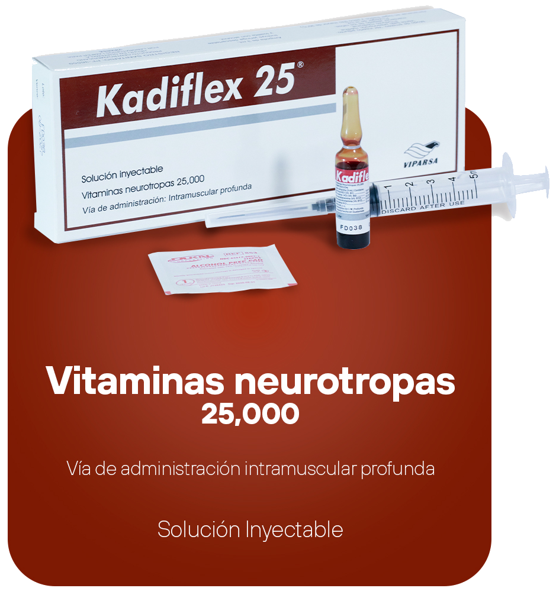

science Composición:
Cada ampolla (3 mL) contiene:
Tiamina HCI (Vit. B1)..........................................................................................100 mg
Piridoxina HCI (Vit. B6)......................................................................................100 mg
Cianocobalamina (Vit. B12).......................................................................20,000 mcg
Hidroxocobalamina (Vit. B12)......................................................................5,000 mcg
Lidocaína HCI.....................................................................................................20 mg
Vehículo, c.s.
bolt Acción terapéutica:
KADIFLEX® 25 es un neuro-regenerador y anti-neurtítico indicado en el tratamiento y prevención de deficiencias del complejo vitamínico B. Su formulación contribuye a la regeneración del tejido nervioso y al alivio de síntomas asociados con neuritis y neuralgias.
clinical_notes Indicaciones:
KADIFLEX® 25 está indicado en neuritis y neuralgias por deficiencia de Vitaminas B1, B6 y B12.
block Contraindicaciones:
- Contiene alcohol bencílico, por lo que no se debe de administrar a niños menores de 6 meses, hipersensibilidad al medicamente.
priority_high Efectos secundarios:
En algunos casos se pueden presentar reacciones locales leves como dolor o enrojecimiento en el sitio de aplicacion. Rara vez se han observado náuseas, cefalea, mareos o reacciones alérgicas cutáneas.
warning Advertencias:
No exceder la dosis recomendada, administrar únicamente por vía intramuscular profunda.
sync_alt Interacciones medicamentosas:
Debe evitarse el uso simultáneo de KADIFLEX® 25 con medicamentos como: digoxina, L-dopa, (fenitoína, fenobarbital), antihipertensivos, glucocorticoides, alcohol. Estas interacciones pueden disminuir la absorción o eficacia de las vitaminas del complejo B.
priority_high Recomendaciones:
- No administrar por vía intravenosa, precaución en pacientes con insuficiencia hepática o renal severa, puede administrarse juntamente con tratamientos de fisioterapia o rehabilitación neuromuscular.
medication Modo de empleo:
Administrar 1 ampolla de 3 mL por vía intramuscular profunda, de 2 a 3 veces por semana, según indicación médica. Se recomienda aplicar lentamente y de forma aséptica
package_2 Presentación:
Caja con 1 ampolla de 3 mL; incluye jeringa desechable y toallita con alcohol